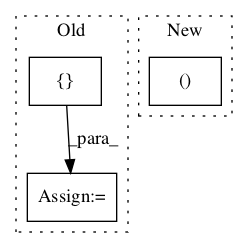

Pattern ID :339

Before Change
print("Edit distance between "%s" and "%s":" % (s1,s2), edit_distance(s1, s2))
s1 = set([1,2,3,4])
s2 = set([3,4,5])
print("s1:", s1)
print("s2:", s2)
print("Binary distance:", binary_distance(s1, s2))
After Change
def demo():
edit_distance_examples = [("rain", "shine"), ("abcdef", "acbdef"), ("language", "lnaguaeg"), ("language", "lnaugage"), ("language", "lngauage")]
for s1, s2 in edit_distance_examples:
print("Edit distance between "%s" and "%s":" % (s1, s2), edit_distance(s1, s2))
for s1, s2 in edit_distance_examples:
In pattern: SUPERPATTERN
Frequency: 4
Non-data size: 3
Instances
Fragment ID: 1078032
Project Name: nltk/nltk
Commit Name: db1699aaf59f73da2434c6745d31540a4db4e59d
Time: 2012-11-30
Author: mheilman@cmu.edu
File Name: nltk/metrics/distance.py
Class Name: AnonimousClass
Method Name: demo
Fragment ID: 1078040
Project Name: nltk/nltk
Commit Name: b76402dcae08ee6926d19934a52100e51b0916da
Time: 2013-04-18
Author: alex.rudnick@gmail.com
File Name: nltk/probability.py
Class Name: ConditionalFreqDist
Method Name: __reduce__
Fragment ID: 1078027
Project Name: nltk/nltk
Commit Name: 16a4e102530ec87cc5b70f32b2c02bf55947ccd0
Time: 2014-02-21
Author: stevenbird1@gmail.com
File Name: nltk/parse/projectivedependencyparser.py
Class Name: ProbabilisticProjectiveDependencyParser
Method Name: parse
Fragment ID: 1078028
Project Name: nltk/nltk
Commit Name: e51065b7819088e050cbf18b60afaa30720b120a
Time: 2015-01-31
Author: stevenbird1@gmail.com
File Name: nltk/tag/senna.py
Class Name: SennaTagger
Method Name: tag_sents